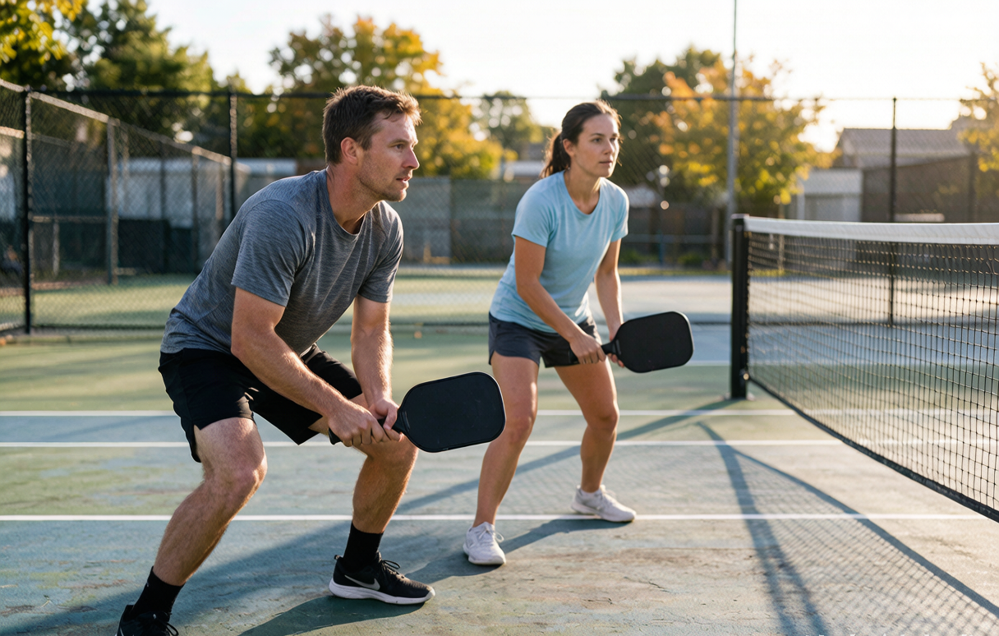

Pickleball strategy for beginners: win points at the net

You can learn every rule and still lose to someone who simply stands in the right place. Pickleball strategy is less about raw skill and more about position, patience, and a couple of habits that separate recreational players from the people who beat them. This is the beginner version: no spin science, just the ideas that win recreational games.
The net is where points are won
If you take one thing from this whole guide, take this. Pickleball is won at the non-volley line. The team that controls the net controls the point, because they can hit down on the ball while their opponents are forced to lift it. After the serve and return, both players on a team should be working toward that line, in controlled steps, not a blind sprint. Settle into a ready position there and you will win rallies you have no business winning.
Why the third-shot drop matters
The serving team starts behind. The returners are already at the net. The serve team's job on the third shot is to close that gap, and the cleanest way is the third-shot drop: a soft shot that clears the net and dies in the kitchen. Done right, it lets the serving team walk up while the ball is safely on the ground near their opponents' feet. New players try to drive this shot hard, which just feeds the net team an easy volley. Learn the drop and you stop losing the point before it starts. If the term is new, our glossary breaks down the third-shot drop and the rest of the court language.
The soft game is not weak
"Dinking" means trading soft shots just over the net, in or near the kitchen. Beginners think it looks boring and try to end every rally with a winner. That impatience is exactly what better players wait for. The dink is a setup, not a surrender. It pulls opponents forward and off balance, and it creates the one slightly high ball you actually can put away. Win the soft battle and the put-away appears on its own.
Doubles positioning
In doubles, you and your partner cover half the court each, side to side, and you shift together as the ball moves. The common error is both players drifting toward the action and leaving a gap. Communicate on middle balls ("mine," "yours") and stay connected. When one partner gets pulled wide, the other slides toward the center to cover the open court. Good positioning looks boring because nothing exciting is happening to you, which usually means you are winning.
The split step
This is the small hop you do just before your opponent hits, landing balanced with your paddle up. It sounds minor and it is the difference between reacting and reaching. Without it, you are still moving when the ball arrives and you hit off-balance. With it, you are already set. Do it on every ball once it becomes habit and your consistency jumps.
Patience beats power
The most common beginner loss is the forced error: someone swings for a winner from a bad position and puts it out. The better play is almost always to keep the ball in, take the pace off, and wait. Pickleball rewards the player who is still standing there after the other person loses patience. If a rally feels like it is going nowhere, that usually means you are doing it right.
Where the paddle fits in
Strategy only works if your equipment gets out of your way. A paddle that is too powerful makes the soft game harder, and one that is too heavy slows your hands at the net. The sweet spot for most beginners is a 16mm core, a widebody shape, and a weight around 7.6 to 8.2 ounces. If you have not chosen yet, our first paddle guide lays out the checklist, and the matcher turns it into a shortlist in 30 seconds.
Start with one habit
Do not try to fix everything at once. Pick the net position. Next time you play, focus only on getting to the line after the serve and return and staying there. Everything else in this guide gets easier once that one habit is in place.
getrallypick may earn a commission from partner links. It never changes our recommendations. See our disclosure.